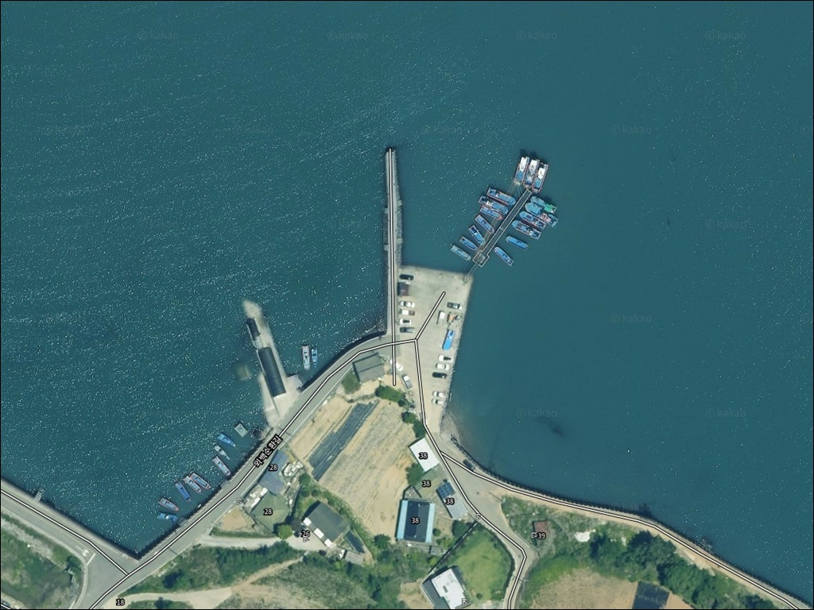
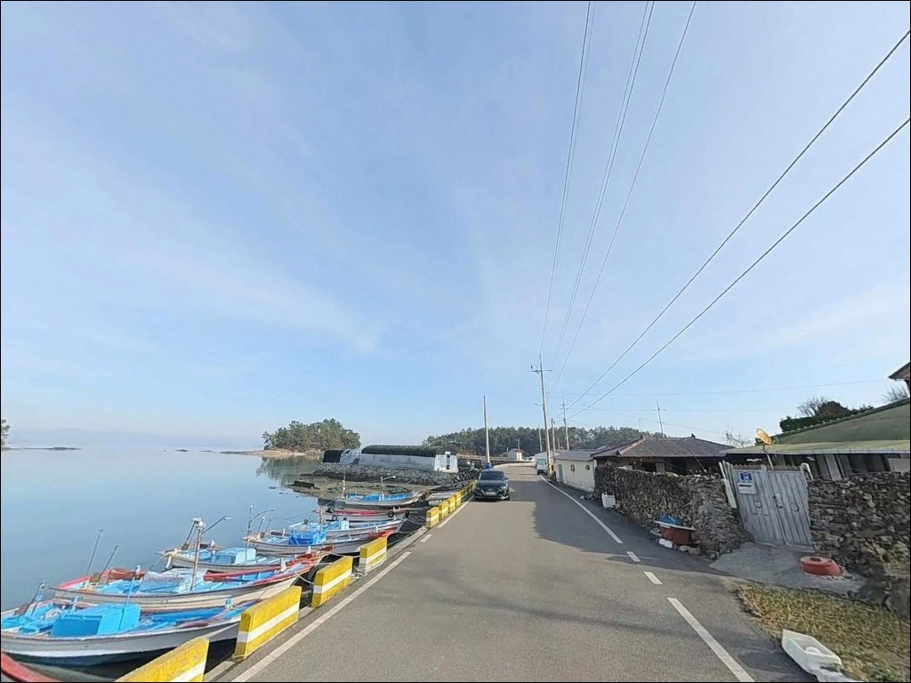
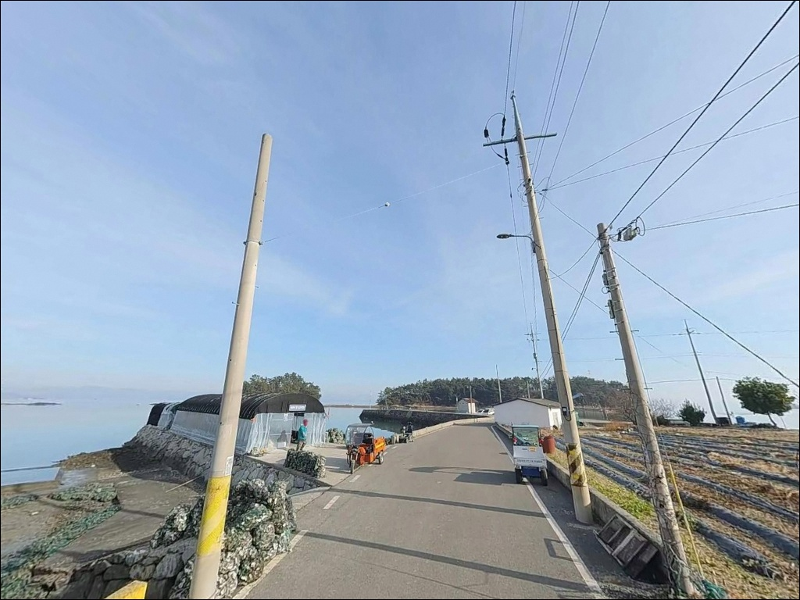
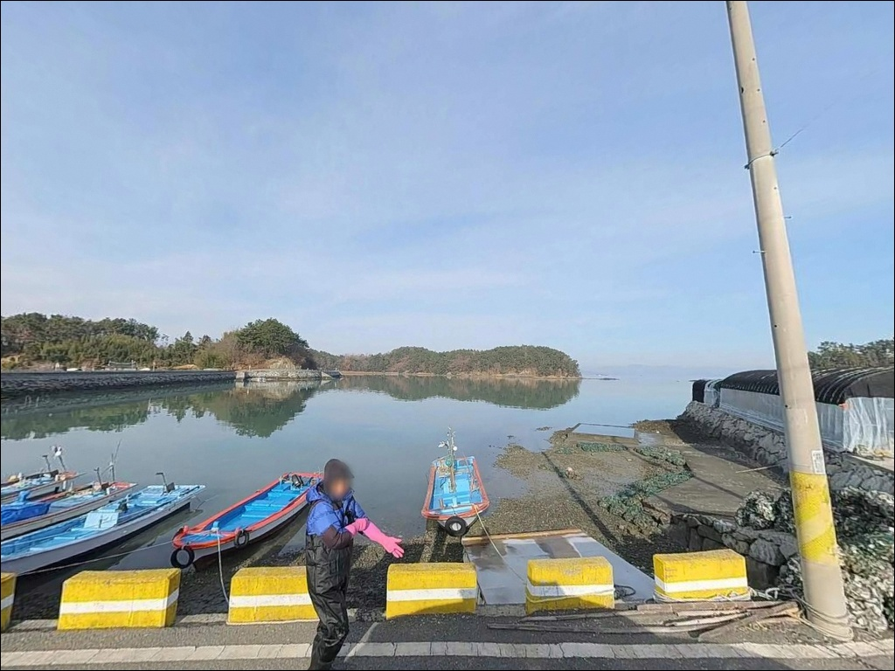
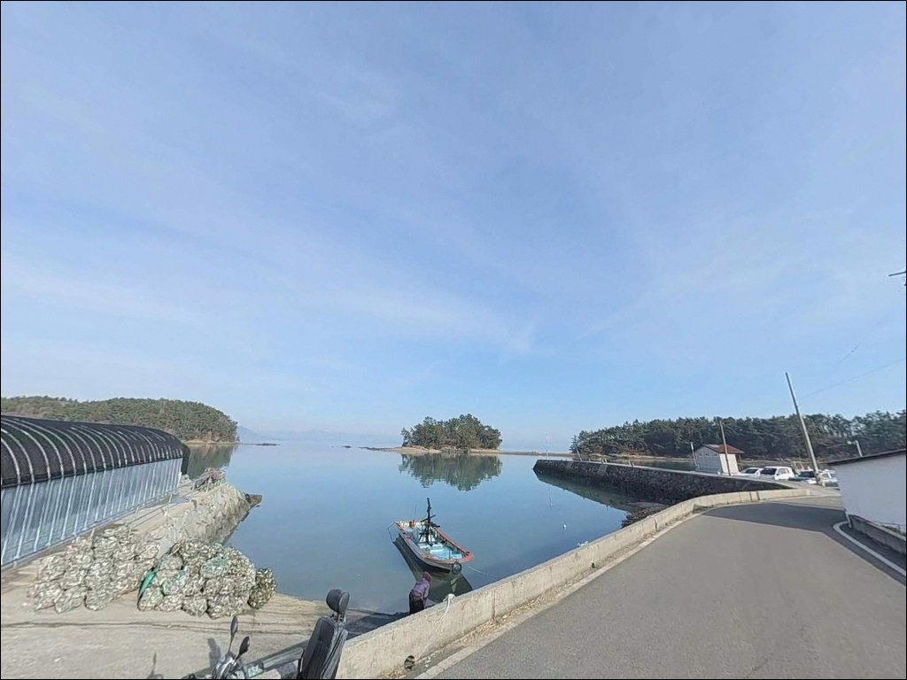
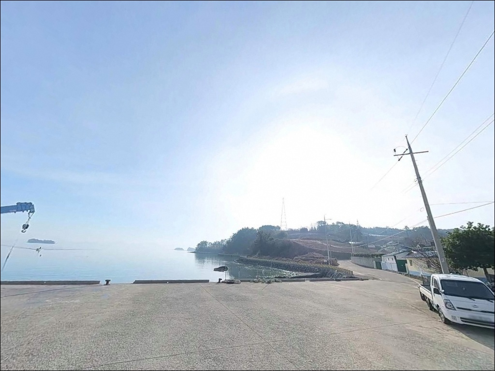
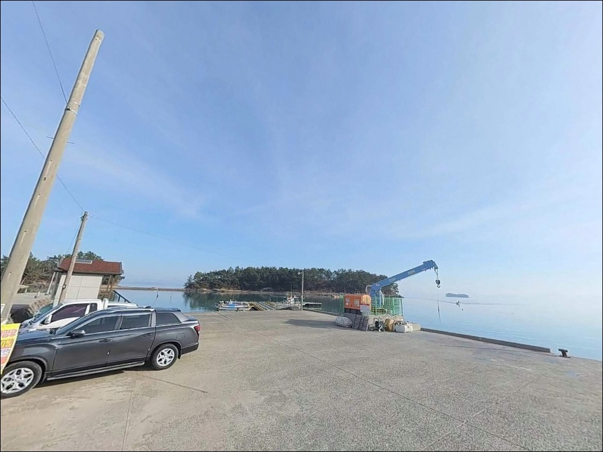
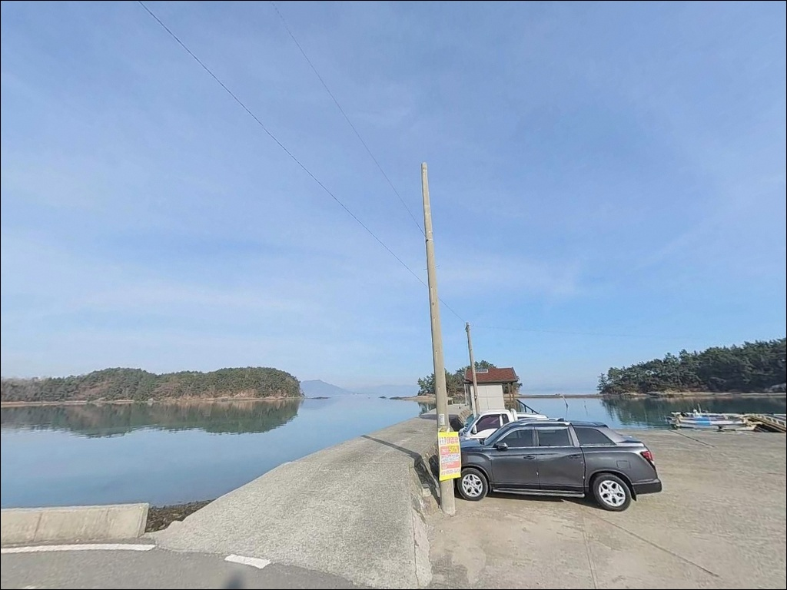
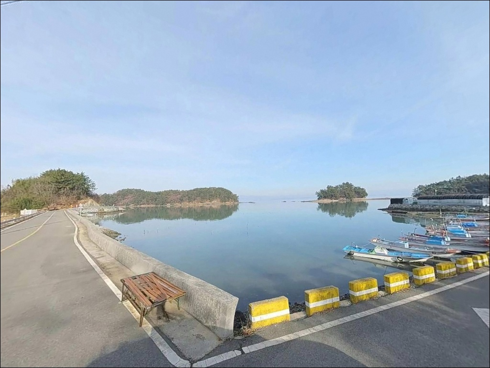

간조 시 갯벌 노출되는 고흥 백일선착장, 만조 전후 원투낚시로 잡은 입질
이 페이지에는 광고(제휴 링크 포함)가 있으며, 광고 링크를 통해 구매하면 운영자가 판매 수익 또는 수수료를 받을 수 있습니다. 포인트 사진: 카카오맵 스카이뷰·로드뷰. 이 페이지의 지도·사진 이미지는 카카오맵의 실제 서비스 이미지와 다를 수 있습니다.


포인트 안내
백일선착장
전남 고흥군 과역면 백일리 2215
백일도에서 가장 많이 틀리는 판단은
"선착장이 있으니 물이 있겠지"라는 전제입니다.
여자만 안쪽 내만 구조에서는
간조 때마다 갯벌이 넓게 노출되고,
낚시가 가능한 수심은
만조 전후 짧은 시간대에만 확보됩니다.
이 글은 백일선착장의 진입 조건,
물때 기준, 낚시 방식 적합성,
차박 체류 환경을 중심으로 정리했습니다.
조황 단정이나 특정 어종 보장은
이 글의 범위에 포함되지 않습니다.

1. 백일대교와 진입 동선 — 1차선 교량이 첫 번째 관문
백일도는 고흥반도 동쪽 해안에서
백일대교로 연결된 연륙도입니다.
이 교량이 1차선 소교라는 점이
진입에서 가장 먼저 확인해야 할 사항입니다.
맞은편에서 차량이 오면 한쪽이 대기해야 하며,
캠핑카나 대형 SUV는 교량 진입 전 교폭 확인이 필요합니다.
다리를 건너면 외백마을을 지나
내백마을 방향으로 이동한 뒤,
소백일도 방향 언덕을 넘어가면
도로 끝 지점에 선착장이 나옵니다.
도로 전 구간이 포장되어 있지만
폭이 좁은 농어촌 소로 구간이 혼재해
승용차 기준으로 이동하는 편이 안전합니다.
주차는 선착장 접안부 인근 콘크리트 평탄 공간이
1순위 후보입니다.
소형 어촌 선착장 특성상 2~4대 수준의 공간이며,
어선 접안과 작업 동선을 막지 않는
자리를 먼저 확인한 뒤 정차해야 합니다.
회차 공간도 넉넉하지 않아
진입 전 차량 방향 전환 가능 여부를 미리 판단하는 것이 좋습니다.

2. 차박 환경과 야간 체류 여건
백일선착장 주변은 내백마을과
어업 관련 건물이 가까운 편이라
완전히 고립된 포인트는 아닙니다.
차량 통행량이 매우 적고
민가 밀집도가 낮아
야간 정숙 환경은 양호한 편입니다.
가로등이 거의 없는 전형적인
소규모 어촌 섬 환경이라
야간 시야 확보는 개인 랜턴과 헤드램프에 의존해야 합니다.
선착장 공터는 차박 주차 공간으로 활용 가능하지만
면적이 협소해
차박을 메인 목적으로 삼기에는 공간이 제한적입니다.
여자만 내만 구조라 외해 파도의 영향은 거의 없고
잔잔한 환경이 유지됩니다.
다만 계절풍 영향은 내만이라도 받을 수 있으므로
출발 전 기상청 해상 예보를 확인하는 것이
기본 준비입니다.


3. 주변 편의시설 및 인프라 현황
백일도 섬 내에는 편의점·식당·마트가 없습니다.
식수, 얼음, 낚시 소품, 연료 모두
백일대교를 건너기 전
육지에서 완전히 준비하고 들어가야 합니다.
섬 밖으로 나가야 하는 거리가 상당하므로
뒤늦게 소품이 부족하다는 사실을 발견하면
그날 출조에 차질이 생깁니다.
육지 쪽 과역면 소재지 방향으로 이동하면
편의점과 하나로마트, 식당가, 주유소를
이용할 수 있습니다.
백일도에서 차로 6km 이상 거리이므로
출발 전 과역면 소재지에서
필요한 물품을 미리 챙기는 동선이 효율적입니다.

4. 물때가 낚시 성패를 가르는 구조 — 방문 전 준비사항
백일선착장에서 가장 먼저 확인해야 할 것은
물때입니다.
여자만 안쪽은 조수 간만의 차가 크고,
백일도 주변 선착장들은
간조 시 갯벌이 넓게 드러나는 구조입니다.
만조 전후 시간대에 맞춰 출조 계획을 수립하지 않으면
낚시 자체가 성립되지 않는 포인트입니다.
바다타임에서 과역면 또는 여자만 기준 물때를
출발 전날 밤과 당일 아침에 두 번 확인하는 것이
기본 루틴입니다.
갯벌 저질 특성상 선착장 끝단 바닥과 접안 구간이
미끄러울 수 있어
이동 시 항상 발 디딤 상태를 먼저 확인해야 합니다.
마을 어선이 이용하는 선착장이라
차량 주차와 낚시 자리 선정 모두
어업 작업 동선과 어구 주변을 피해야 합니다.
야간 입장 시에는 헤드랜턴과 구명조끼를 필수로 갖추고,
낚시 후 발생하는 채비 잔류물과 쓰레기는
반드시 수거해 나와야 합니다.

5. 지형 기반 낚시 여건 분석
백일선착장은 선창 건물을 중심으로
좌우에 방파제가 감싸는 구조입니다.
방파제 외항 측은 여자만 수로 방향으로 열려 있어
내항보다 수심이 깊어지는 편이고,
조류 영향을 조금 더 받는 외항 성격 포인트로
활용됩니다.
방파제 외항 기준 수심은 3~10m 구간으로
내항의 1.8~3m보다 유효 수심이 확보됩니다.
저질은 펄과 모래가 혼합된 갯벌 바닥입니다.
간조 시에는 선착장 주변과 내항 구간에
갯벌이 노출되는 면적이 넓어지고,
만조 전후에만 원거리 캐스팅이
실질적인 의미를 갖습니다.
바닥이 뻘이라 봉돌이 박히지 않도록
가벼운 채비 운용이 기본입니다.
여자만 안쪽이라는 위치 특성상
외해 포인트에서 기대하는 강한 조류 흐름은 없습니다.
대신 만 구조가 만드는 조석 흐름이
갯벌 경계 수역에 어종을 끌어모으는 구조입니다.
이 일대 해역에서는 붕장어·숭어·감성돔이
연안 내만을 회유하는 패턴을 보입니다.
출조 전 고흥 과역면 또는 여자만 조황을
먼저 검색해 보시기 바랍니다.


6. 백일선착장에 어울리는 낚시 스타일
이 포인트에서 가장 효율적인 방식은
원투낚시입니다.
방파제 외항 끝단에서 30~50m 권으로
갯벌 경계 수역을 공략하는 단거리 원투가
내만 특성과 맞는 방식입니다.
뻘 바닥 어종인 붕장어는 여름 야간에
가장 활발하게 입질이 들어오는 편이고,
만조 전후 1~2시간이 핵심 타이밍입니다.
찌낚시도 병행할 수 있습니다.
만조 전후 선착장 주변으로
감성돔과 숭어가 들어오는 구조이며,
조류가 약한 내만 환경이라
채비 컨트롤이 상대적으로 쉬운 편입니다.
활성도가 높은 만조 시간대에 집중하는 것이
찌낚시 효율을 높이는 방법입니다.
라이트 루어도 선착장 주변 직벽 구간과
방파제 끝단에서 시도해볼 수 있습니다.
내만 구조라 조류 세기가 강하지 않아
루어 컨트롤 난이도 자체는 낮지만,
소형 어종 위주 탐색 낚시로 접근하는 것이
현실적인 기대치입니다.
에깅은 여자만 안쪽 환경 특성상
적합성이 낮은 편입니다.

7. 대안 포인트와 플랜 B 동선
물때가 맞지 않거나 백일선착장 여건이
기대에 미치지 못할 경우,
같은 여자만 해역 안에서
내병리 선착장을 첫 번째 대안으로 고려할 수 있습니다.
차로 약 15분 거리이며
지형과 수심 조건이 유사한 내만형 포인트입니다.
여자만 동쪽 출구 방향으로 이동하면
점암면 여호항에 닿습니다.
국가어항으로 지정된 곳으로
백일도보다 외해 조건에 가까워
수심과 조류 여건이 한 단계 올라갑니다.
조과가 기대에 미치지 못할 때 이동하기 좋은 대안이며,
낚시 방식 선택 폭도 넓어집니다.
차박 여건이 더 넓은 공간이 필요하다면
백일대교를 나온 뒤
고흥반도 쪽 연안 소규모 선착장 주변을
함께 탐색하는 동선이 효율적입니다.
섬 안보다 주차 공간이 여유롭고
과역면 소재지 인프라 접근도 수월합니다.

물때 한 번 맞아 들어가면
백일도 선착장은 조용한 원투 포인트가 됩니다
번잡한 대형 항구보다
사람 없는 조용한 내만 포인트를 선호하는 낚시인이라면
백일선착장의 분위기 자체는 잘 맞는 구조입니다.
여자만 안쪽 특유의 정수역 환경에서
원투 채비를 놓고 기다리는
단품 출조 스타일에 적합한 포인트입니다.
반면 물때 확인 없이 찾아가거나
편의시설을 기대하고 들어가면
갯벌과 빈 선착장만 마주하는 결과가 됩니다.
물때 확인, 자급 준비, 백일대교 진입 조건 점검,
이 세 가지를 갖추고 만조 타이밍에 맞춰 들어가면
아직 많이 알려지지 않은 조용한 포인트로
충분히 기억에 남는 출조가 될 수 있는 곳입니다.
낚시를 마치고 해 질 무렵 조용한 선착장 공터에서
하룻밤 차 안에 머무는 체류를 생각하는 낚시인이라면,
가로등 없는 백일도 밤 분위기와
내만의 잔잔함이 그 선택을 뒷받침합니다.